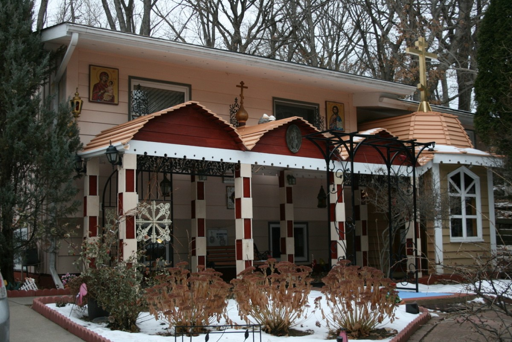
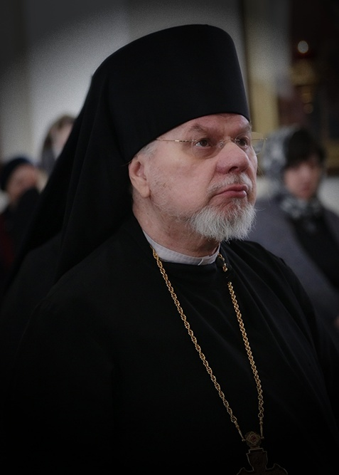
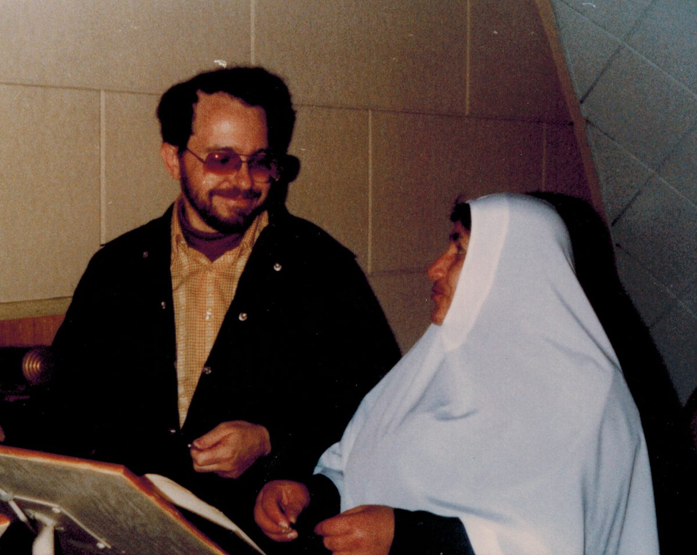
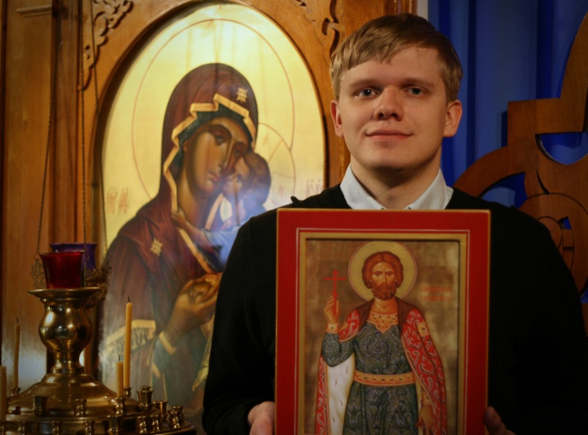
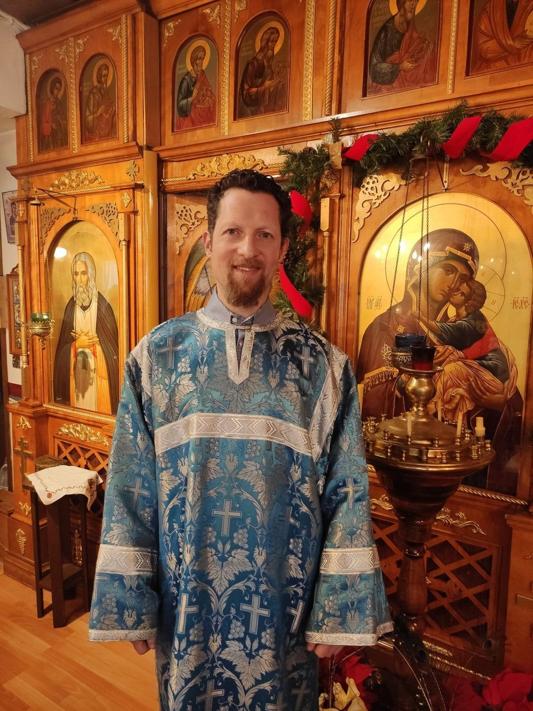
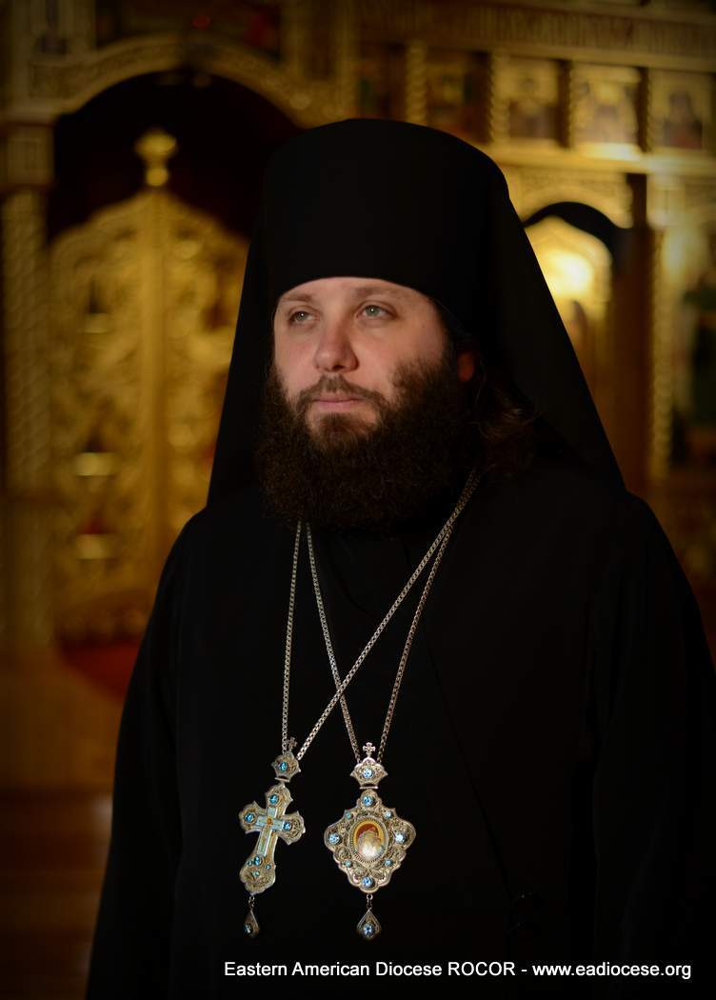
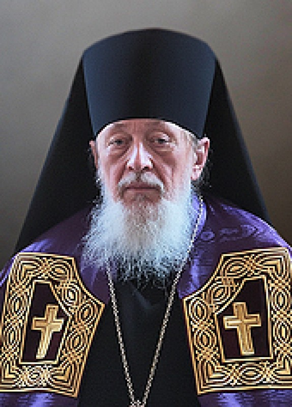

Our Parish & Skete
A small Russian Orthodox community north of Minneapolis, where a monastic brotherhood and a parish share one church.
Our church stands on a quiet residential street in Fridley, a few miles north of downtown Minneapolis. It is not a grand cathedral. It is a small wooden church with a gold cross above the porch, icons on the outside walls, and a warm, close interior where the singing is never far from you.
Two things live here together. The first is a skete — a small monastic community, quieter and more hidden than a monastery, where the daily cycle of prayer is kept. The second is a parish: families, converts, students, Russian-speakers and English-speakers who gather every Saturday evening and Sunday morning, and who stay afterward for a meal and conversation.
Because of that mixture, the services here are unhurried and traditional, sung in Church Slavonic and English, while the preaching is done in both Russian and English so that no one is left out.

The church building
The church was built and adorned largely by the hands of its own people. The iconostasis, the carved woodwork, the painted walls and the stained glass were made and set in place over many years, and the work continues.
If you visit on a weekday you may find the church empty and quiet. That is when it is easiest to look closely at the icons.
See our photographs →Clergy & Administration

Rector
Archimandrite John (Magramm)
Rector of the Church and Skete of the Resurrection of Christ. Known to the parish as Father Ioann.

Choir director & treasurer
Subdeacon James Sivanich
Directs the choir and keeps the accounts of the parish.

Senior acolyte & reader
Alexander Poppenhagen
Serves in the altar and reads at the services.

Acolyte & starosta
Constantine Sokolinsky
Warden of the church, responsible for its upkeep.
Our Hierarchs

First Hierarch
Metropolitan Nicholas of Eastern America and New York
First Hierarch of the Russian Orthodox Church Outside Russia.

Our diocesan bishop
Bishop Spyridon of Chicago and Mid-America
His Grace Bishop Spyridon (Gusakov), previously of Toronto, was appointed to the See of Chicago and Mid-America by the Council of Bishops.
Memory eternal
We remember with gratitude Archbishop Peter (Loukianoff) of Chicago and Mid-America, who reposed on November 8, 2024; Archbishop Alypy (Gamanovich), who reposed at Pascha 2019; and Mother Ioanna (Sister Vera) of our own skete. Commemoration of the departed explains how the Church remembers those who have fallen asleep.
Where We Belong
We are a parish of the Russian Orthodox Church Outside Russia (ROCOR), within the Diocese of Chicago and Mid-America. ROCOR was formed by Russian bishops, clergy and faithful who found themselves outside Russia after the revolution, and it has since become the church home of many who were not born Russian at all.
Support Our Church
Our church and monastery are supported entirely by the offerings of the faithful. May God bless you for your help.
Ways to give